Створити проект
- Створити на коп'ютері папку з назвою проекта
- Відкрити цю папку за допомогою VSC
- Створити в VSC в цій папці файл index.html
- Відкрити файл index.html зажати клавішу Shift і натиснути 1 потім Enter
Як додати CSS до проекту
-
1) Створити на коп'ютері папку з назвою проекта
2) Відкрити цю папку за допомогою VSC
3) Створити в VSC в цій папці файл index.html
4) Створити в VSC в цій папці файл style.css
5) Відкрити файл index.html зажати клавішу Shift і натиснути 1 потім Enter
6) В файлі index.html в частині "head" прописуємо "< link rel="stylesheet" href="./тут вибираємо наш файл (style.css)" />"
Приклад:
< head>
< meta charset="UTF-8" />
< meta http-equiv="X-UA-Compatible" content="IE=edge" />
< meta name="viewport" content="width=device-width, initial-scale=1.0" />
< link rel="stylesheet" href="./style.css" />
< title>Конспект-ІТ
< /head>
Скелет HTML-документа
< ! DOCTYPE html >
--- це не тег, а обов'язкова інструкція оголошення типу документа. Вона потрібна для того, щоб повідомити браузеру, в якій версії HTML написаний документ.
< html lang="uk">
--- Кореневий елемент документа як контейнер, який містить в собі увесь вміст сторінки. Все, що знаходиться за його межами, не сприймається браузером як HTML-код і не обробляється.
Атрибут lang вказує, якою мовою написаний текст сторінки.
< head>
Призначений для зберігання службової інформації про сторінку: заголовок, опис, кодування тощо. Вся ця інформація не відображається у вікні браузера, однак, містить дані, які вказують браузеру, яким чином потрібно обробляти сторінку.
< meta charset="utf-8" />
utf-8 - найпоширеніше кодування
< meta name="viewport" content="width=device-width, initial-scale=1.0" />
width=device-width - встановлює ширину в'юпорту (width), що дорівнює фізичній ширині екрану пристрою (device-width).
initial-scale=1.0 - встановлює співвідношення (масштаб) 1:1 між CSS-пікселями і апаратними пікселями пристрою.
Тег < meta > використовується для зберігання інформації, призначеної для браузера і пошукових систем
META ТЕГИ Frilancer
< meta name="description" content="Вивчення основ HTML5 для новачків" />
Короткий опис змісту допомагає пошуковим системам краще проіндексувати сторінку. (Щоб краще шукало сторінку в гоогл)
< title>HTML5 - це просто!< / title>
Заголовок сторінки, відображається у вкладці браузера. Довжина заголовка повинна бути не більше 60 символів, щоб повністю поміститися у заголовку. Текст заголовка повинен містити короткий опис вмісту веб-сторінки.
ЩОБ ДОДАТИ ШРИФТИ CSS АБО ЩО-НЕБУДЬ ІНШЕ ДОДАЄМО ТУТ ТЕГ: < link> ПІДКЛЮЧЕННЯ ШРИФТІВ
ТУТ ЗНАХОДИТЬСЯ ВЕСЬ КОД ПРОЕКТУ
< header> < /header>
< main> < /main>
< footer> < /footer>
БЕМ
FrilancerСемантична верстка
СЕМАНТИЧНА ВЕРСТКА САЙТІВ FrilancerТип елементів
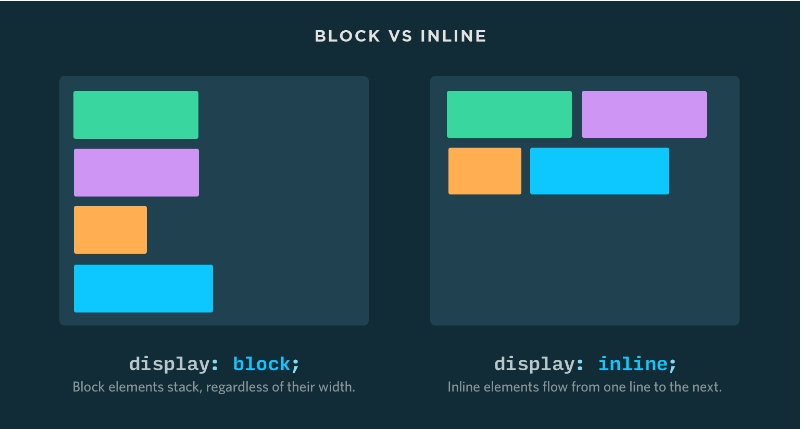 Frilancer-
Ховаємо елементи
display: none
Значення display: none дозволяє повністю приховати елемент, звільнивши його простір для інших. Такий елемент вилучається з потоку документа, візуально ховається і не бере участі у розмітці сторінки.
-
Блоковий елемент
Блоковий елемент (display:block) - займає повністю увесь рядок, незалежно від обсягу його контенту, тому кілька блокових елементів візуально йдуть один за одним зверху вниз.
Блокові HTML тегиБлокові використовуються для розмітки текстових контейнерів (заголовок, список, абзац) і великих смислових розділів (секція, шапка, підвал).
Для них задана властивість display: block.
Вони займають всю доступну ширину рядка (простір за горизонталлю) всередині батька.
Їх висота визначається вмістом, якщо явно не задана у властивості height.
Вони завжди починаються з нового рядка, тому кілька сусідніх блокових елементів розташовані вертикально один під одним.
Їм можна задавати будь-які властивості геометрії елемента: ширину, висоту, поля, рамки і відступи.Фіксована ширина
Навіть якщо ширина блокових елементів задана явно, вони все одно будуть розташовуватися вертикально один під одним. Все вільне місце в рядку за замовчуванням займається автоматичним правим відступом (margin-right) елемента.
-
Рядковий елемент
Рядковий елемент (display:inline) - займає місце по своєму вмісту, тому кілька малих елементів можуть розташовуватися на одному рядку. Якщо в рядку не вистачає місця для вміщення рядкового елемента, він переноситься на новий рядок.
Рядкові HTML тегиРядкові елементи призначені для виділення і оформлення текстового контенту. Наприклад посилання, кнопка, зображення тощо.
Для них задана властивість display: inline.
Їх ширина і висота залежать тільки від вмісту, явно задати їх не можна. Тобто властивості width і height не мають жодного ефекту.
Вони розташовуються в рядку доти, доки в ньому є достатньо місця, після чого нові переносяться на наступний рядок.
Їм можна задавати тільки горизонтальну геометрію: ліві і праві поля, відступи і рамки. Тобто вони ігнорують значення верхніх і нижніх margin, padding і border.
Проміжок у рядкових елементів
У рядкових і рядково-блокових елементів є правий або, у разі зображень, нижній проміжок. Це не margin або padding, а буквально порожнє місце - особливість того, як браузер розташовує рядковий контент в рядку.
Як прибрати нижній проміжок у зображення.
.image {display: block;}
Особливості вертикальних полів і рамок
Верхні і нижні поля, а також рамки рядкового елемента працюють дуже дивно - не збільшують розмір блоку, але візуально відображаються.
Візуально фон заповнив вертикальні поля і рамки, які «залазять» на сусідні рядки абзацу та поводяться дуже дивно. Це особливість відображення в браузері, вони жодним чином не впливають на геометрію сусідніх елементів, і тому не використовуються.
-
Рядково-блокові елементи (inline-block)
Гібрид між блоковими і рядковим елементами, який взяв все найкраще від обох.
Вони використовуються у тих випадках, коли рядковим елементам потрібно додати декоративні ефекти. Наприклад, задати посиланню вертикальні поля, відступ або ширину з висотою, візуально зробивши з неї кнопку, або перетворити в іконку з фіксованими розмірами.
Для них задана властивість display: inline-block.
Їх ширина і висота залежать від вмісту, але можна явно задати властивості width і height.
Вони розташовуються в рядку доти, доки в ньому є достатньо місця, після чого нові переносяться на наступний рядок.
Їм можна задавати будь-які властивості геометрії елемента: ширину, висоту, поля, рамки і відступи. -
Flexbox
FLEXBOX FROGGYДетальніше
Шпаргалка по FLEXBOX
Frilancer 1 Flexbox
це CSS-модуль, який визначає набір властивостей для розміщення, вирівнювання і розподілу простору між елементами в контейнері, навіть якщо їх розмір невідомий або динамічний.
Основна ідея полягає в тому, щоб розділити елементи на блок-контейнер (flex-контейнер) і його дітей (flex-елементи).
Flexbox-контейнер може змінювати ширину і висоту його дітей, а також напрямок їх розташування - вирівнювання в колонку або рядок, порядок відображення елементів і відстань між ними. Контейнер розширює елементи, щоб найоптимальніше заповнити доступний простір, або стискає їх, щоб запобігти переповненню.
Елементи втрачають «тип», перестають бути рядковими або блоковими.
Блокові елементи перестають розташовуватись вертикально один під одним.
Крайні відступи на стику з межею батька не випадають.
Вертикальні відступи елементів не схлопуються.
Працюють автоматичні вертикальні відступи.
-
Термінологія
main axis
головна вісь flex-контейнера, вздовж якої розташовуються елементи. Вона не обов'язково горизонтальна, її напрямок контролюється властивістю flex-direction.
main-start і main-end
елементи в контейнері завжди розташовуються від main-start (початок головної осі) і до main-end (кінець головної осі).
cross axis
поперечна вісь, яка завжди перпендикулярна до головної осі. Її напрямок залежить від головної осі і явно не встановлюється.
cross-start і cross-end
початок і кінець поперечної осі, вздовж якої розташовуються рядки елементів.
-
Властивості контейнера display:
display: flex | inline-flex
Створює flex-контейнер, блоковий або рядково-блоковий, залежно від заданого значення, і встановлює flex-контекст для всіх дітей (не нащадків) контейнера, перетворюючи їх у flex-елементи.
display: flex
блоковий
display: inline-flex
рядково-блоковий
-
Розташування елементів в одному певному напрямку - горизонтально або вертикально.
Frilancer 3 Flexboxflex-direction: row | row-reverse | column | column-reverse;
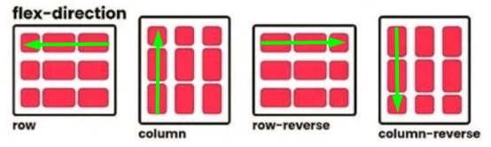 -
Управляє позиціонуванням елементів на головній осі від main-start до main-end.
justify-content: flex-start | flex-end | center | space-between | space-around | space-evenly
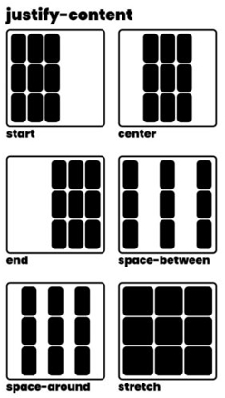 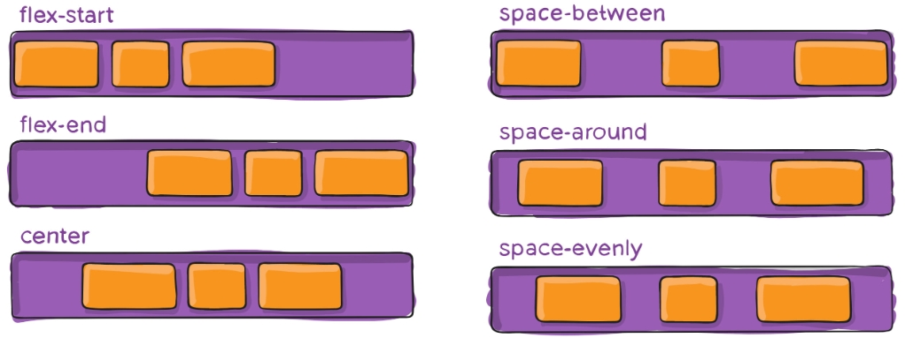 -
Управляє розташуванням елементів вздовж поперечної осі.
align-items: stretch | flex-start | flex-end | center | baseline


-
Властивість flex-wrap дозволяє перетворити однорядковий контейнер у багаторядковий.
flex-wrap: nowrap | wrap | wrap-reverse

-
Управляє вирівнюванням всіх рядків багаторядкового контейнера вздовж поперечної осі, якщо є вільне місце.
align-content: flex-start | flex-end | center | space-between | space-around | space-evenly | stretch
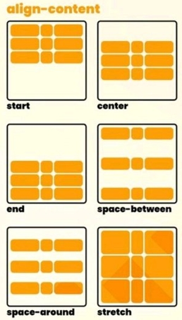 -
Задає відступи між колонками та рядками
gap:
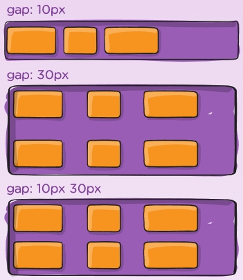
Flexbox Властивості елемента
Flex-елементи - це діти flex-контейнера, елементи першого рівня вкладеності. Flex-елементи (далі просто елементи) перестають підкорятися стандартному потоку документа, втрачають свій тип (блоковий, рядковий тощо) і дотримуються правил позиціонування Flexbox-моделі.
Frilancer 2 Flexbox-
Короткий запис: flex: flex-grow flex-shrink flex-basis
flex: 0 1 auto
flex: [контролює можливість увеличуватись бокса: 0/1] [контролює чи може бокс зменшуватись: 0/1] [управляє базовим розміро бокса: auto/30%/50px]
-
Визначає початковий розмір елемента перед розподілом вільного простору.
flex-basis: auto | значення
Якщо вказані обидві властивості, flex-basis і width, то властивість width ігнорується.
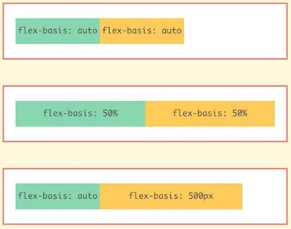
Властивість flex-basis - це не фінальний розмір елемента, а розмір до розподілу вільного простору.
Властивості min-width і max-width працюють як обмежувачі розміру елемента, навіть якщо у нього вказаний flex-basis, а не width.
Властивість flex-basis може визначати висоту, а не ширину елемента. Це відбувається у разі, якщо головна вісь - вертикальна.
-
Визначає здатність елемента, у разі потреби, займати більше місця (рости), ніж його початковий розмір.
flex-grow: частка
За замовчуванню у всіх елементів встановлено значення 0, тобто елементи не намагаються зайняти додаткове вільне місце, навіть якщо таке є. Від'ємні значення задавати не можна.
Наприклад, якщо у всіх елементів встановлено однакове значення цієї властивості, то вони займуть однакову кількість місця в контейнері. А ось, якщо всім задати значення 1, а одному елементу 2, то він спробує зайняти в два рази більше місця, ніж будь-який інший елемент.
Ще один частий випадок застосування властивості flex-grow - картка з «футером» притиснутим до її низу, незалежно від обсягу контенту.
Ця техніка складається з двох кроків.
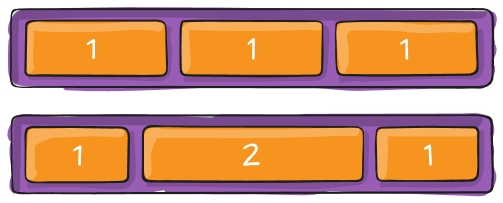
.card {display: flex;
flex-direction: column; }
.card > .content {flex-grow: 1;} -
Визначає здатність елемента, у разі потреби, займати менше місця (стискатися), ніж його початковий розмір.
flex-shrink: частка
За замовчуванням у всіх елементів встановлено значення 1, тобто елементи будуть стискатися у разі потреби. Від'ємні значення задавати не можна.
-
Дозволяє елементу змінити своє положення на поперечній осі, перевизначивши для себе значення властивості align-items від контейнера. Аналогу для головної осі не існує, елемент може змістити себе тільки на поперечній осі.
align-self: auto | flex-start | flex-end | center | baseline | stretch
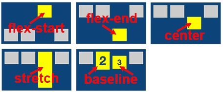 -
Використовуючи властивість order можна візуально змінити порядок розташування елементів вздовж головної осі. При цьому, в HTML-коді нічого не зміниться.
order: позиція
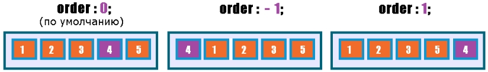 -
Позиційовані елементи
FrilancerШПАРГАЛКА
За замовчуванням елементи на сторінці розташовуються зліва направо і зверху вниз. А як зробити напис на зображенні товару, показати один елемент поверх іншого при ховері або змусити меню завжди бути прикріпленим до верхньої частини в'юпорту, навіть під час скролу? Для вирішення подібних завдань існує властивість position, що дозволяє буквально підняти елемент і розмістити його поверх будь-якого іншого.
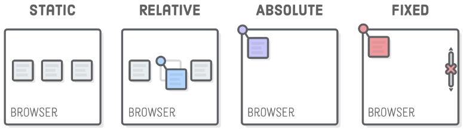-
Змінює тип позиціонування елемента.
position: static | relative | absolute | fixed | sticky | inherit
Для зазначення положення елемента використовуються властивості top, left, bottom або right, які застосовуються до елементів без position.
-
Відносне позиціонування
елемент залишається в потоці сторінки, тобто сусідні елементи не займають його місце. Проте, візуально елемент можна зсунути щодо його оригінального положення, водночас він може перекривати сусідів.
Властивості top, left, bottom і right дозволяють вказати зміщення елемента (візуальне) щодо його вихідного положення. Можуть приймати від'ємні значення.
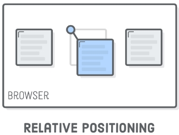 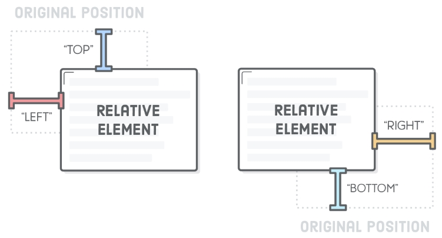 -
Абсолютне позиціонування
Під час використання абсолютного позиціонування елемент виривається з потоку сторінки, тобто сусідні елементи займають його місце. Відлік значень top, left, bottom і right для абсолютно позиційованого елемента ведеться щодо найближчого предка з позиціонуванням, відмінного від статичного. Якщо такого предка не буде, то відлік буде здійснюватися від меж елемента < body>.
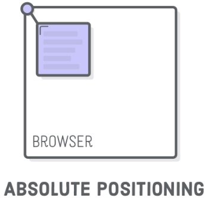 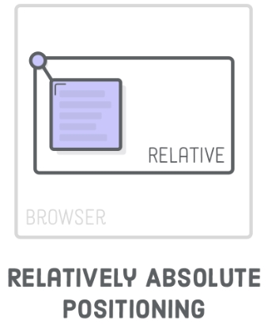 -
Фіксоване позиціонування
У разі фіксованого позиціонування, елемент вилучається з потоку сторінки і позиціонується щодо в'юпорту (вікна браузера). Це створює ефект фіксації елемента в певному місці екрану при прокручуванні сторінки.
Фіксоване позиціонування використовується для закріплених хедерів з навігацією, спливаючих вікон, чатів з менеджером на сторінках інтернет-магазинів тощо.
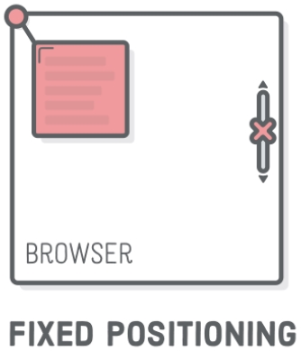 -
Липке позиціонування
Липке позиціонування (sticky) - це ніби комбінація властивостей relative і fixed.
Доки елемент знаходиться у своєму контейнері і контейнер не покидає область видимості під час вертикальної прокрутки - елемент поводить себе ніби позиціонується щодо (relative).
Щойно частина батьківського контейнера залишає зону видимості, елемент фіксується на сторінці доти, доки хоча б якусь частину контейнера видно на екрані.
Якщо весь контейнер покине зону видимості, то знову увімкнеться поведінка як під час відносного позиціонування - елемент зникне з екрану одразу після контейнера.Для реалізації липкого позиціонування необхідні всього три умови:
У липкого елемента повинно бути встановлено позиціонування position: sticky.
У липкого елемента повинно бути встановлено положення, наприклад top: 0.
Елемент-контейнер повинен бути більшим по висоті за липкий елемент. -
задає властивість z-index, яке контролює глибину (порядок) позиціонованих елементів на сторінці по осі z - від очей користувача і до екрану.
Властивість z-index
Що більше значення z-index, то вище розташовується елемент.
.box:nth-child(2) { z-index: 1;}
-
управляє тим, як поводиться вміст елемента, якщо його розмір перевищує допустиму довжину або ширину.
overflow: visible | hidden | scroll | auto
visible - видимий переповнюючий вміст. Значення за замовчуванням.
hidden - все, що виходить за межі блоку, буде візуально приховане.
scroll - у разі переповнення з'являються горизонтальна і вертикальна смуги прокручування, навіть якщо потрібна тільки одна.
auto - схоже на значення scroll, але смуги прокручування показуються тільки там, де вони дійсно необхідні, а не всі відразу.Значення visible
Якщо не вказати властивість overflow, то за замовчуванням встановлюється значення visible і, у разі переповнення, вміст буде відображатися за межами блоку.
Значення hidden
Протилежне значення visible. У цьому випадку будь-який переповнюючий вміст, який виходить за межі елемента, не відображається.
Пам'ятайте, що у цьому випадку переповнюючий контент недоступний і прихований від користувача. Саме тому ми ніколи не задаємо фіксовану висоту текстовим блокам.
Значення scroll
Якщо встановлене значення scroll, переповнюючий вміст буде прихований, але з'являться скроллбари, щоб була можливість переглянути увесь контент. Водночас будуть показані обидва скроллбари - горизонтальний і вертикальний, навіть якщо потрібен тільки якийсь один.
Значення auto
Значення auto схоже на значення scroll, за винятком того, що показуються тільки ті смуги прокручування, які дійсно необхідні.
-
Заокруглене зображення
Зображення поводяться таким чином, що візуально виходять за межі блоку, якщо їх розмір більший. Ця особливість спливає у прийомі заокруглення рамок зображення. Зображення обгортається в «тумбу», якій задаються стилі рамки та її радіуса. На допомогу приходить властивість overflow та її значення hidden, яке задається «тумбі» і контролює видимість переповнюючого контенту.
* { box-sizing: border-box;}
img { display: block; max-width: 100%;}
.thumb { border: 10px solid green; border-radius: 50px; width: 480px; overflow: hidden;}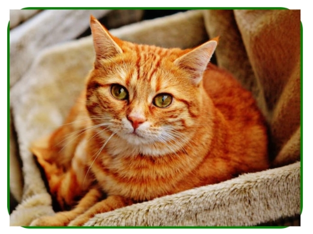 -
Декоративний оверлей (ВИЇЖАЮЧЕ ВІКНО)
Властивість overflow зі значенням hidden використовується під час створення декоративних ефектів з появою прихованого контенту через межі блоку.
-
Спочатку абсолютно позиціонуємо div.overlay щодо div.box і розтягуємо його на всю ширину і висоту div.box.
.box {position: relative;}
.overlay {
position: absolute;
top: 0;
left: 0;
width: 100%;
height: 100%;
} -
Використовуючи властивість transform і translateX, зміщуємо div.overlay вліво на 100% його ширини.
.overlay {
position: absolute;
top: 0;
left: 0;
width: 100%;
height: 100%;
transform: translateX(-100%);
} -
При ховері по div.box, використовуючи transform і translateX, повертаємо div.overlay у початкове положення.
.box:hover .overlay { transform: translateX(0);}
-
Задаємо div.box властивість overflow зі значенням hidden, щоб візуально приховати div.overlay, коли той зміщений за межі div.box.
.box { position: relative; overflow: hidden;}
-
Додаємо div.overlay перехід для анімації властивості transform.
.overlay {
position: absolute;
top: 0;
left: 0;
width: 100%;
height: 100%;
transform: translateX(-100%);
transition: transform 250ms ease;
}
Такий ефект реалізується за допомогою кількох простих кроків.
< div class="box">
< div class="overlay">< /div>
< /div> -
-
Псевдокласи стану
Frilancer-
Псевдокласи стану
:hover
Активується, коли курсор миші знаходиться в межах елемента, наприклад, при наведенні миші на посилання або будь-який інший елемент.
.link:hover {color: tomato}
:focus
Активується, коли інтерактивний елемент (посилання, кнопка, поле форми) отримує фокус під час навігації по сторінці клавіатурою (клавішею Tab).
.link:focus {color: tomato}
:active
Відбувається під час активації елемента. Наприклад, посилання стає активним, якщо навести на нього курсор і клацнути мишкою. Незважаючи на те, що активним може стати практично будь-який елемент, псевдоклас :active використовується в основному для посилань і кнопок.
.link:active {color: red}
:visited
Цей псевдоклас активується на посиланнях, які вже були відвідані. За замовчуванням посилання відображаються синіми і після відвідування стають фіолетовими.
.link:visited {color: green}
Ховер в таблиці
.schedule-body > tr:hover {background-color: tomato; color: white}
Псевдоелементи
FrilancerПсевдоелементи ::before і ::after використовуються для додавання декоративних ефектів (іконок, плашок, оверлеїв) без необхідності створення додаткових порожніх тегів в розмітці.
За замовчуванням це рядкові елементи. Для того щоб задати псевдоелементу вертикальну геометрію, необхідно змінити його тип на блоковий або, здебільшого, на рядково-блоковий.
-
створює псевдоелемент перед усім контентом елемента (на початку).
::before
.box::before {/* стилі псевдоелемента before */}
-
створює псевдоелемент після всього контенту елемента (в кінці).
::after
.box::after {/* стилі псевдоелемента after */}
-
обов'язкова властивість
content: '';
Ця обов'язкова властивість дозволяє додати текстовий контент всередину псевдоелемента. Навіть, якщо текстовий контент не потрібен, його значенням необхідно поставити порожній рядок, інакше браузер просто не створить псевдоелемент.
.box::before {content: 'Це текст в ::before'; font-size: 40px; color: orange;}
Структурні псевдокласи
Frilancer-
Дозволяють вибрати перший елемент в колекції сусідів.
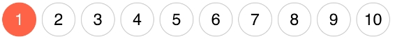:first-child
Дозволяють вибрати перший або останній елемент в колекції сусідів. Наприклад, якщо кожному елементу списку задати нижній відступ, то він буде і в останнього. Крайню геометрію необхідно обов'язково чистити, тому що такі відступи можуть неочевидно випадати або розширювати батька.
.list-item:last-child { margin-bottom: 0;}
-
Дозволяють вибрати останній елемент в колекції сусідів.
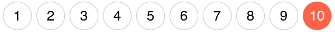:last-child
Аналогічно працює :first-child, застосовуючи стилі до першого елемента в колекції сусідів. Наприклад, коли потрібно задати верхній відступ всім елементам, крім першого.
.list-item:first-child { margin-top: 0;}
-
Дозволяє вибрати всі елементи, які не задовільняють критерій - простий селектор записаний в дужках.
:not(selector)
Простий селектор - це універсальний селектор, селектор типу, ідентифікатора, атрибута, класу або псевдокласу.
.list-item:not(:last-child) { margin-bottom: 12px;}
-
Вибирає елементи в колекції сусідів за номером, зазначеним в дужках, за допомогою циклу an+b, який дозволяє задати правило для послідовності елементів.
:nth-child(an+b)
a - період циклу. Довільне число.
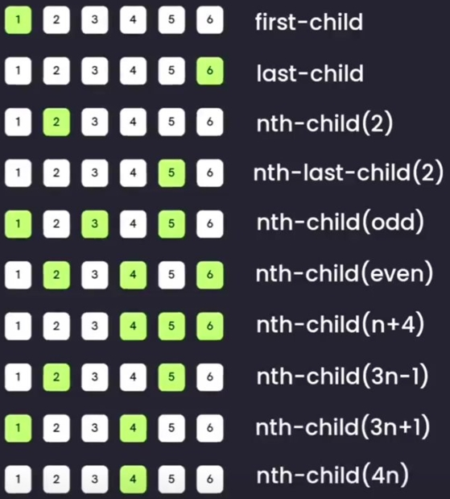
n - лічильник циклу. Починається з нуля і збільшується на одиницю на кожній ітерації.
b - зміщення. Довільне число.
-
N-й елемент
У найпростішому випадку можна передати буквально номер елемента колекції.
.list-item:nth-child(5) { background-color: orange;}
-
Парні і непарні елементи
Для вибору всіх парних елементів можна використовувати формулу 2n або її псевдонім - значення even - зарезервоване слово.
.list-item:nth-child(2n) {background-color: orange;}
.list-item:nth-child(even) { background-color: orange;}

Для вибору непарних елементів можна використовувати формулу 2n + 1 або її псевдонім - значення odd - зарезервоване слово.
.list-item:nth-child(2n + 1) {background-color: orange;}
.list-item:nth-child(odd) { background-color: orange;}
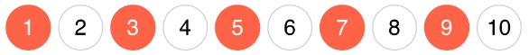 -
Від N-го елемента
Якщо задати a = 1, то результуюча формула n + b дозволяє вибрати всі елементи, починаючи з елемента під номером b.
.list-item:nth-child(n + 6) { background-color: orange;}
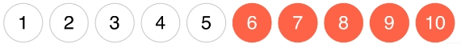 -
До N-го елемента
Якщо задати a = -1, то результуюча формула -n + b дозволяє вибрати всі елементи, починаючи з першого і до елемента під номером b.
.list-item:nth-child(-n + 5) {background-color: orange;}
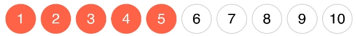 -
Кожен N-й елемент
Наприклад, для того щоб вибрати кожен 3-й елемент, починаючи з першого, використовуємо цикл an+b, в якому a = 3, а зміщення - b = 1.
.list-item:nth-child(3n + 1) {background-color: orange;}
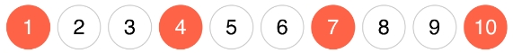 -
Аналог :nth-child() з відмінністю у тому, що відлік ведеться з кінця колекції (Останнього елемента).
:nth-last-child(an+b)
Аналогічно працює :first-child, застосовуючи стилі до першого елемента в колекції сусідів. Наприклад, коли потрібно задати верхній відступ всім елементам, крім першого.
-
N-й елемент
Виберемо 3-й елемент з кінця, тобто 8-й, тому що всього 10-ть елементів. Якби всього було 20-ть елементів, тоді був би обраний 18-й тощо.
.list-item:nth-last-child(3) { background-color: orange;}
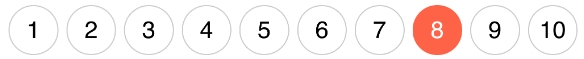 -
До N-го елемента
Щоб вибрати кілька останніх елементів в колекції, використовується формула -n + b, де b - це кількість елементів, що вибираються.
.list-item:nth-last-child(-n + 3) {background-color: orange;}
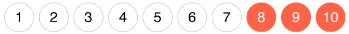 -
Додаткові псевдокласи
- :first-of-type - вибирає перший селектор цього типу.
- :last-of-type - вибирає останній селектор цього типу.
- :only-of-type - вибирає елемент, який є єдиною дитиною такого типу в колекції сусідів.
- :nth-of-type(an+b) - вибирає номер селектора, використовуючи формулу an+b.
- :nth-last-of-type(an+b) - аналог :nth-of-type() з відмінністю у тому, що відлік ведеться з кінця колекції (останнього елемента).
- :only-child - вибирає елемент, який є єдиною дитиною з таким селектором в колекції сусідів.
- :empty - вибирає порожні елементи, тобто без нащадків і тексту.
Псевдоелементи тексту
Frilancer-
Управляє стилем першого символу в тексті елемента
::first-letter
елемент::first-letter {...}
-
Управляє стилем виділення тексту елемента
::selection
pre::selection {
color: #ffffff;
background-color: #3f51b5; }
Одиниці вимірювання в CSS
-
ШПАРГАЛКА Frilancer
- CSS EM REM и прочие единицы измерения CSS. Что когда использовать? Подробное объяснение на практике.
-
Велечина шрифту
- Thin - 100
- ExtraLight - 200
- Light - 300
- Regular - 400
- Medium - 500
- SemiBold - 600
- Bold - 700
- ExtraBold - 800
- Black - 900
-
Розмітка тексту
ВСІ ТЕГИ-
Теги
< dl >
це контейнер для списку пар термінів та їх описів, тобто словник. Для розмітки термінів існує тег < dt >, а для описів - < dd >. Використовується для розмітки списку визначень, наприклад для створення глосарію, телефонного довідника тощо.
< span >
Універсальний контейнер для дрібного текстового контенту, наприклад окремих слів, частин слів або цілих фраз всередині текстового масиву.
< pre >
За замовчуванням браузер ігнорує перенесення рядків і більше одного пробілу підряд. Цей тег дозволяє додати переформатований текст з примусовими перенесеннями рядків. Наприклад, розмітка тексту пісні або вірша.
< sup >
< sub >
Призначені для відображення символів у верхньому (< sup>, скорочено від superscript) і нижньому (< sub>, скорочено від subscript) індексі. Наприклад, для розмітки нескладних математичних або хімічних формул.
< time >
< datetime >
Дату і час можна написати просто текстом, але краще використовувати спеціальний тег < time>. Дата для людини - це текст всередині тегу, а для машини - значення атрибута datetime у форматі ISO 8601.
Останні новини на < time datetime="2019-12-14">14 грудня 2019 року< /time>.
< address >
Призначений для зберігання контактної інформації
< strong >
семантично підкреслює текст як важливий і вказує, що це важливе слово або фраза.
< b >
робить текст тільки візуально жирним
< em >
семантично виділяє текст, на який зроблений особливий акцент, що змінює зміст фрази. Наприклад, можна виділити сарказм.
< i >
робить текст тільки візуально курсивним
CSS
Нормалізація стилів
-
підключення файлу стилів
< link rel="stylesheet" href="https://cdnjs.cloudflare.com/ajax/libs/modern-normalize/1.0.0/modern-normalize.min.css" />
в різних браузерах елементи можуть виглядати дещо інакше. Нормалізація стилів - це спроба вирішити цю проблему, шляхом підключення ще одного файлу стилів, в якому виправлені всі можливі розбіжності між таблицями стилів браузерів. Все що необхідно зробити - це підключити ще один файл стилів перед усіма вашими стилями.
Специфічність селектора
-
Селектори 4-го рангу
Специфічність - 0 0 0 1
p { color: green}
Специфічність - 0 0 0 2
article > p {color: orange}
-
Селектори 3-го рангу
Специфічність - 0 0 1 0
.post-title {color: green}
Специфічність - 0 0 1 1
.post > h1 {color: red}
Специфічність - 0 0 2 0
.post > .post-title {color: orange}
Специфічність - 0 0 2 1
.post > a.post-title {color: orange}
-
Селектори 2-го рангу
Специфічність - 0 1 0 0
#title {color: orange}
-
Селектори 1-го рангу
Специфічність - 1 0 0 0
< p style="color: green;"> < /p>
-
Специфічність правила можна підвищити за допомогою ключового слова
!important
p {color: orange !important}
CSS-змінні
-
Оголошення змінної
:root {--brand-color: #3f51b5}
-
Використання змінної
.section-title {color: var(--brand-color)}
-
Резервні значення
.section-title {color: var(--brand-color, black)}
Функція var(ім'я_змінної, фолбек) може приймати два значення. Другий аргумент - це фолбек - значення, яке буде використовуватися, якщо змінна, яка передана першим аргументом, не визначена.
Робота з кольором
-
Колір тексту
color: колір | inherit
color:red (червоний)
color: inherit (наслідує колір батька)
-
Колір фону
background-color: колір | transparent | inherit
.text {background-color: red} (колір фону червоний)
.text {background-color: inherit} (Успадковує значення батька.)
.text {background-color: transparent} (Встановлює прозорий фон.)
-
Прозорість кольору
p {background-color: rgba(255, 0, 0, 0.3)}
p {background-color: rgba(100%, 0%, 0%, 30%)}
Основний спосіб додавання прозорості кольору - це функція rgba(). На відміну від rgb() ще додається прозорість (альфа канал).
Найчастіше прозорість задається числом від 0 (прозорий) до 1 (не прозорий).
Але можна і відсотками від 0% (прозорий) до 100% (не прозорий).
Оформлення тексту
Frilancer-
Задає різні декоративні підкреслення та інші ефекти тексту.
text-decoration: none | underline | line-through | overline
line-through
Створює перекреслений текст .
overline
Лінія проходить над текстом.
underline
Встановлює підкреслений текст .
none
Скасовує всі ефекти, в тому числі і підкреслення у посилань, яке задано за умовчанням.
inherit
Значення успадковується у батька. -
Управляє регістром символів робить всі літери великими або малими.
text-transform: none | uppercase | lowercase | capitalize
capitalize
Перший символ кожного слова в реченні буде заголовних. Решта символів свій вигляд не змінюють.
lowercase
Все символи тексту стають малими (нижній регістр).
uppercase
Все символи тексту стають прописними (верхній регістр).
none
Чи не змінює регістр символів.
inherit
Успадковує значення батька. -
Управляє вирівнюванням текстового вмісту елемента за горизонталлю.
text-align: center | justify | left | right | start | end
center Вирівнювання тексту по центру.
justify
Вирівнювання по ширині, що означає одночасне вирівнювання по лівому і правому краю.
left/start
Вирівнювання тексту по лівому краю.
right/end
Вирівнювання тексту по правому краю.
inherit
Успадковує значення батька.
-
Відстань між буквами
letter-spacing
letter-spacing: normal/length/initial/inherit;
-
Встановлює величину відступу першого рядка блоку тексту, наприклад абзацу. Не впливає на всі інші рядки, крім першого.
text-indent: значення | відсотки | inherit
.post-text {text-indent: 100px}
-
Встановлює міжрядковий інтервал (інтерлін'яж, висоту рядка) тексту.
line-height: множник | значення | відсотки | normal | inherit
.text {line-height: 1.5}
-
Визначає інтервал між словами.
word-spacing: значення | normal | inherit
p {word-spacing: 20px; }
Властивості шрифту
-
Задає розмір шрифту
font-size
.text { font-size: 20px;}
-
Контролює товщину (жирність, вага) літер шрифту.
font-weight
.title { font-weight: 400;}
-
Задає стиль тексту, наприклад можна зробити текст похилим.
font-style: normal | italic | oblique | initial | inherit
normal
Звичайне зображення тексту.
italic
Курсив.
oblique
Похиле накреслення. Курсив і похилий шрифт при всій їх схожості не одне і те ж.
inherit
Успадковує значення батька.
-
Сімейство використованого шрифту, задає шрифт тексту елемента.
font-family
body { font-family: 'Helvetica Neue', 'Roboto', 'Verdana', 'Tahoma', sans-serif; }
Блокова модель
Frilancer CSS padding и margin
-
Встановлює тип блокової моделі елемента - формулу розрахунку його розмірів.
box-sizing: content-box | border-box | inherit
content-box
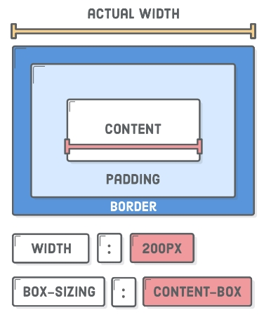
властивості width і height задають ширину і висоту області вмісту і не включають розміри полів (padding), меж (border) і відступів (margin).
border-box
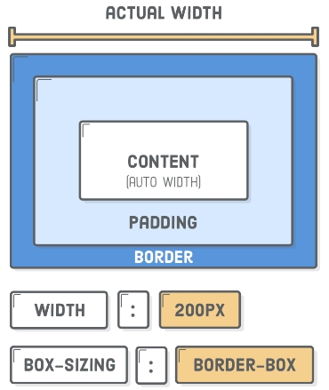
властивості width і height задають фінальний розмір елемента і включають значення полів (padding) і меж (border), але не відступів (Margin).
inherit
наслідує значення блокової моделі предка.
-
Для того щоб не ставити властивість box-sizing кожному елементу окремо, на самому початку файлу стилів використовується наступний CSS-код.
*,
*::before,
*::after {
box-sizing: border-box;
} -
Властивість border
Frilancerborder: ширина стиль колір;
border: 5px solid tomato;
Існує багато стилів рамок, найпопулярніші значення - це solid, dashed і dotted.
Також існують властивості для того, щоб задати ці значення окремо.
border-width: ширина;
border-style: стиль;
border-color: колір;Індивідуальні рамки
.box {
/* Встановить стилі верхньої рамки */
border-top-width: 3px;
border-top-style: solid;
border-top-color: blue;
/* Встановить стилі правої рамки */
border-right-width: 5px;
border-right-style: dotted;
border-right-color: black;
/* Встановить стилі нижньої рамки */
border-bottom-width: 7px;
border-bottom-style: dashed;
border-bottom-color: palevioletred;
/* Встановить стилі лівої рамки */
border-left-width: 9px;
border-left-style: dashed;
border-left-color: green;
}
Закруглена рамка. Наступні властивості дозволяють закруглити кожен кут рамки окремо.
/* верхній лівий кут */
border-top-left-radius: значення;
/* верхній правий кут */
border-top-right-radius: значення;
/* нижній правий кут */
border-bottom-right-radius: значення;
/* нижній лівий кут */
border-bottom-left-radius: значення; -
Grid CSS Grid Layout.
- CSS Grid Layout // Шпаргалка
- Кроссбраузерность. Grid и Flex. Основные понятия.
- Свойства определения сетки grid-template и другие
- Свойства элементов grid сетки grid-row grid-column order gap и другиеv
- CSS Grid Layout. Практика
СSS COLUMNS
Препроцесори SASS
- Documentation
- SASS/SCSS Frilancer
- Prepros что это. Как пользоваться prepros // Сборка фронтэнда // Компилятор SASS KIT
Препроцесори дозволяють використовувати конструкції, які прискорюють і спрощують написання коду. Файли з цим синтаксисом мають розширення .scss, наприклад main.scss.
Процес розробки зводиться до таких кроків.
- Налаштовуємо інструмент для компіляції SASS-коду.
- Пишемо код у файлах з розширенням .scss.
- SASS автоматично компілюється в CSS і створюється CSS-файл.
- Підключаємо скомпільований CSS-файл в index.html.
-
ПІДКЛЮЧЕННЯ ТА НАЛАШТУВАННЯ SASS-SCSS
- Установлюємо в VSC розширення "Live Sass Compiler"
- В описі програми переходимо за посиланням "FAQs" і відкриваємо "How do I change the settings?" і копіюємо налаштування
{ "liveSassCompile.settings.formats": [ { "format": "expanded", "extensionName": ".css", "savePath": "/css" }, { "extensionName": ".min.css", "format": "compressed", "savePath": "/dist/css" } ], "liveSassCompile.settings.excludeList": ["**/node_modules/**", ".vscode/**"], "liveSassCompile.settings.generateMap": true, "liveSassCompile.settings.autoprefix": ["defaults"] }
Рекомендовано /dist видалити якщо не використовується
- В папці проекта створюємо папку ".vscode" а в ній файл settings.json і вставляємо в нього скопійовані налаштування
- Створюємо в папці проекта папку "sass" а в ній файл main.scss
- Внизу в VSC появляється значок "Watching..." нажимаємо на нього (при роботі з sass завжди має бути включений)
- Після цього всього створиться папка css а в ній файли
- Далі ми підключаємо в файлі index.html з папки css файл зі стилями main.min.css
< link rel="stylesheet" href="./main.min.css" />
- підключення нормалайзу
-
Змінні в SASS, Мапи (словники)
Оголошення змінних
варіант-1
$color-primary: #8e3329;
$color-accent: #d98328;
$text-primary: 15px;
$text-secondary: 20px;варіант-2
$colors: (
'primary': #8e3329,
'accent': #d98328,
'secondary': #5a1321,
);Використання змінних
варіант-1
color: $color-primary;
font-size: $text-primary;варіант-2
section { background-color: map-get($colors, 'background');}
Скорочення використання змінних
Постійно писати map-get() і передавати ім'я мапи незручно. Напишемо функцію-утиліту для простішого доступу до властивостей. Цю функцію оголошуємо у тому ж файлі, де знаходиться мапа.
@function getColor($key) { @return map-get($colors, $key);}
.button {
color: getColor('primary');
background-color: getColor('background');
} -
Вендорні префікси
Вендорні префікси - це спеціальні приставки, що використовуються виробниками (вендорами) браузерів для експериментальних CSS-властивостей і значень, які ще не прийняті у стандарті, або не повністю реалізовані в браузері.
Список вендорних префіксів по браузерам:
-webkit- - Chrome, Safari, Edge, нові версії Opera.
-moz- - Firefox.
-o- - Старі версії Opera.
-ms- - Internet Explorer.Вручну прописувати їх не потрібно, для цього використовуються спеціальні інструменти Автопрефиксер CSS онлайн
-
Вкладені правила
Вкладеність дозволяє робити одні оголошення правил всередині інших.
css
.section { width: 100%;}
.section .title { color: red;}
.section .text { font-size: 14px;}scss
.section {
width: 100%;
.title { color: red; }
.text { font-size: 14px; }
} -
-
Конкатенація селекторів
Символ & (амперсанд) дозволяє вказати, в яке місце необхідно підставити батьківський селектор.
css
.link { color: black;}
.link:hover { color: red;}
.link:focus { color: red;}scss
.link { color: black;
&:hover { color: red; }
&:focus { color: red; }
} -
Арифметичні операції
Додавання і віднімання
На відміну від функції calc(), в препроцесорі не можна змішувати типи одиниць. При спробі виконати додавання або віднімання несумісних типів, виникне помилка. Пікселі до пікселів, слони до слонів.
.box {
width: 960px + 10%; // Помилка!
width: 960px + 30px; // 990px
width: 960px + 30; // 990px
width: 100% + 20%; // 120%
width: 100% - 50px; // Помилка!
width: 960px - 30px; // 930px
width: 960px - 30; // 930px
width: 100% - 20%; // 80%
}Справа в тому, що препроцесор не знає наперед, скільки буде 100% або 5em у пікселях. Значення відносних одиниць в пікселях можна дізнатися тільки в момент рендеру HTML-сторінки. Тому для таких обчислень необхідно використовувати нативну функцію calc().
.box {
width: calc(100% - 20px);
width: calc(5em + 20px);
} -
Множення
Виконується аналогічно функції calc() в CSS, за винятком того, що не можна множити несумісні типи. Також не можна множити слонів на слонів, можна тільки слонів на множник.
.box {
width: 50px * 50px; // Помилка!
width: 50% * 5%; // Помилка!
width: 50px * 2; // 100px
width: 10px * 2 + 50px; // 70px
width: 5 * (5px + 15px); // 100px
} -
Ділення
Ділення в препроцесорі виконується у трьох випадках.
$value: 50px;
.box {
// 1 - значення зберігається у змінній.
width: $value / 5; // 10
// 2 - значення, взяті в круглі дужки.
width: (100px / 5); // 20px
// 3 - значення використовується як частина іншого виразу.
width: 100px / 5px + 10px; // 30px
} -
Змінні в операціях
Якщо в арифметичній операції використовується валідне значення змінної, не буде жодних проблем.
css
.box { margin: 40px;}
scss
$gridItemMargin: 20px;
.box { margin: $gridItemMargin * 2;}Але у разі, якщо SASS-змінна використовується в функції calc(), під час компіляції її ім'я не замінюється на значення.
css
.box { margin: calc($gridItemMargin * 2);}
scss
$gridItemMargin: 20px;
.box { margin: calc($gridItemMargin * 2);}У таких випадках необхідно робити інтерполяцію значення змінної, використовуючи спеціальну конструкцію #{$ім'я_змінної}.
css
.box { margin: calc(20px * 2);}
scss
$gridItemMargin: 20px;
.box { margin: calc(#{$gridItemMargin} * 2);} -
Імпорт scss файлів @import
Писати увесь код в одному великому файлі незручно. Тому препроцесор SASS дозволяє зберігати стилі в окремих файлах і збирати їх як мозаїку.
За замовчуванням SASS-компілятор створює CSS-файл для кожного Sass-файлу, який зустріне в проекті. Для того щоб після компіляції отримати всього один файл стилів, використовують фрагменти (partials) - звичайні Sass-файли, ім'я яких починається з нижнього підкреслення, наприклад _logo.scss. Нижнє підкреслення говорить компілятору про те, що це фрагмент і він не повинен компілюватися в окремий CSS-файл, а буде використаний в іншому Sass-файлі.
На ілюстрації зображена базова структура Sass-файлів в проекті. В папці sass є один головний файл main.scss, для якого після компіляції буде створений файл main.css, який ми підключаємо в index.html. В папках utils і components лежать фрагменти, які будуть частиною main.scss.
Для того щоб підключити фрагмент в інший Sass-файл, використовується директива @import.@import 'utils/colors';
@import 'utils/mixins';
@import 'components/header';
@import 'components/logo';
@import 'components/site-nav';
@import 'components/section';Коли компілятор зустрічає директиву @import, він підставляє код імпортованого файлу на місце імпорту. Після компіляції виходить один CSS-файл, скомпільований з декількох фрагментів.
-
наслідування (розширення) вже існуючих стилів @extend
Застосуємо її, щоб створити компонент кнопки з декількома станами.
Використовує стилі базового (обраного) селектора, наприклад створений базовий селектор з css для кнопки який одинаковий у всіх кнопок. Потім ми його добавляємо до любої кнопки через @extend: ім'я селектора базового а далі всі інші значення для даної кнопки які відрізняють її від інших.
css
.button,
.button-error,
.button-success {
display: inline-flex;
border-radius: 3px;
font-size: 16px;
padding: 10px 20px;
color: white;
background-color: gray;
}
.button-success {background-color: green;}
.button-error {background-color: red;}scss
.button {
display: inline-flex;
border-radius: 3px;
font-size: 16px;
padding: 10px 20px;
color: white;
background-color: gray;
}
.button-success {
@extend .button;
background-color: green;
}
.button-error {
@extend .button;
background-color: red;
}Розширення (наслідування) не зробить копію стилів для кожного селектора, а грамотно додасть потрібні селектори у перелік до правила з наслідуваними стилями.
-
Шаблони (плейсхолдери) - %
Шаблон це селектор з набором властивостей який буде в scss але не в css і ми можемо використати для різний селекторів з базовими в ньому значеннями підходящими для всіх елементів певного типу
Але що, якщо ми хочемо розширити набір стилів, для якого не потрібний базовий селектор? Наприклад, якщо не потрібний селектор .button з попереднього прикладу, адже сам по собі він нічого не робить і не буде використаний в HTML.
Для таких випадків існує placeholder (плейсхолдер, заповнювач місця, шаблон) - довільне ім'я селектора з обов'язковим символом % на початку, наприклад %button.
Після компіляції будуть доступні селектори .button-success і .button-error, прив'язані до правила шаблону, а самого імені шаблону в CSS не буде.css
.button-error,
.button-success {
display: inline-flex;
border-radius: 3px;
font-size: 16px;
padding: 10px 20px;
color: white;
background-color: gray;
}
.button-success {
background-color: green;
}
.button-error {
background-color: red;
}scss
%button {
display: inline-flex;
border-radius: 3px;
font-size: 16px;
padding: 10px 20px;
color: white;
background-color: gray;
}
.button-success {
@extend %button;
background-color: green;
}
.button-error {
@extend %button;
background-color: red;
} -
Міксіни або домішки @mixin
Створення міксина
Міксіни або домішки, як і плейсхолдери, дозволяють створювати готові набори властивостей, але з різними значеннями, залежно від отриманих аргументів під час виклику міксіна.
Міксін оголошується за допомогою директиви @mixin та його імені. Далі можуть йти необов'язкові параметри в круглих дужках (самі дужки обов'язкові), а у фігурних - набір властивостей і значень.Створимо міксін для встановлення тільки верхньої і нижньої рамки елемента, і зробимо колір рамки значенням, що може налаштовуватися. Параметри міксіна - це локальні SASS-змінні.
@mixin bordered($color) {
border-top: 1px solid $color;
border-bottom: 1px solid $color;
}Використання міксина
Додати стилі міксіна до селектора можна за допомогою директиви @include, після якої викликаємо міксін і передаємо значення для властивостей, що налаштовуються.
Після компіляції будуть тільки правила для селекторів .section і .header з доданим кодом з міксіна, коду оголошення самого міксіна не буде.css
.section {
border-top: 1px solid tomato;
border-bottom: 1px solid tomato;
padding: 20px;
}
.header {
border-top: 1px solid green;
border-bottom: 1px solid green;
min-height: 80px;
}scss
@mixin bordered($color) {
border-top: 1px solid $color;
border-bottom: 1px solid $color;
}
.section {
@include bordered(tomato);
padding: 20px;
}
.header {
@include bordered(green);
min-height: 80px;
}Міксін відрізняється від плейсхолдера тим, що властивості дублюються в кожен селектор. Все тому, що значення властивостей міксіна можуть бути різними, залежно від переданих аргументів під час виклику @include міксін(аргументи). У той час як властивості та їх значення в плейсхолдері завжди однакові.
-
Дає змогу примінити до декількох селекторів одинакові значення @each
@each < значення> in < список значень> { // Тіло директиви @each}
Директива @each - це цикл, який виконає тіло директиви для кожного значення зі списку. Це дозволяє скоротити кількість коду, який необхідно написати вручну.
Наприклад, необхідно створити серію селекторів для елементів з фоновими зображеннями.
.dog-icon { background-image: url('../images/dog.png'); }
.cat-icon { background-image: url('../images/cat.png'); }
.bird-icon { background-image: url('../images/bird.png'); }
.turtle-icon { background-image: url('../images/turtle.png'); }
Занадто багато повторюваного коду.Використовуючи директиву @each, можемо досягнути такого самого результату, записавши наступний Sass-код, який буде скомпільований в CSS з попереднього прикладу.
@each $animal in dog, cat, bird, turtle {
.#{$animal}-icon {
background-image: url('../images/#{$animal}.png');
}
}Директива @each встановлює $animal у кожне зі значень списку тварин і для кожного створює код, записаний в тілі директиви - CSS-правило з селектором класу і набором властивостей.
$animal - локальна змінна, в яку будуть послідовно присвоюватися значення зі списку тварин. Ім'я змінної може бути довільним. Ми перебираємо список тварин, тому назвали animal - тварина.
dog, cat, bird, turtle - список тварин, кожен елемент якого розділений пробілом з комою.Для того щоб підставити значення змінної $animal, необхідно використовувати інтерполяцію #{$ім'я_змінної}, оскільки ми створюємо рядки. Без інтерполяції ім'я змінної не буде замінено на її значення під час компіляції.
Адаптивна верстка
Frilancer-
Медіа-запити
Медіа-запити - це те, що робить можливим створення сучасних адаптивних веб-сторінок, які однаково добре виглядають на будь-якому екрані, чи то десктоп, чи то смартфон.
Алгоритм застосування стилів наступний:
Розробник описує набір медіа-запитів і CSS-правил всередині них.
Браузер відстежує зміну розміру в'юпорту.
Браузер застосовує CSS-правила з медіа-запитів, що відповідають поточному розміру в'юпорту.Синтаксис @media
@media media-type and (media-feature) {
* Набір CSS-правил, які потрібно застосувати до документа,
* якщо дотримуються умови перевірки медіатипу і виразу
}
Медіа-запит - це спеціальна CSS-конструкція, яка оголошується директивою @media, за якою може йти тип пристрою (media-type) і медіа-функції (media-feature) - вирази, що перевірять характеристики пристрою (наприклад ширину в'юпорту). Медіа-функція - це логічний вираз, який повертає істину (вірно) або хибність (невірно).
зробити фон < body> помаранчевим при ширині в'юпорту 900px і ширше
@media screen and (min-width: 900px) {
body {background-color: orange; }
}
якщо сторінка відображається на екрані, ширина якого не менше 900 пікселів, необхідно застосувати вказане CSS-правилоУмова перевірки може бути настільки складною або простою, наскільки цього вимагає ситуація. Здебільшого достатньо вказати медіа-тип пристрою (найчастіше screen), і перевірити тільки ширину в'юпорту.
Цей медіа-запит застосується під час друку документа.
@media print { /* ... */ }
Цей медіа-запит застосується при ширині в'юпорту більше 400px.
@media screen and (min-width: 400px) { /* ... */ }
Тип screen можна не вказувати, якщо стилі пишуться тільки для екранів.
@media (min-width: 400px) { /* ... */ } -
Медіа-типи
Медіа-тип використовується для опису типу пристроїв, на яких може відображатися веб-сторінка.
Всього існує три типиall
якщо не вказати тип носія, за замовчуванням буде використано це значення, яке означає будь-який пристрій.
print
відповідає принтерам і пристроям, призначених для відтворення друкованого варіанту, наприклад веб-браузера, що відображає документ у режимі «Попередній перегляд».
screen
описує пристрої з фізичним екраном: смартфони, планшети, монітори, телевізори тощо. Тобто все, що не охоплює тип print.
-
Медіа-функції @media
Дві медіа-функції, що найчастіше використовуються і дозволяють визначати ширину в'юпорту браузера - min-width і max-width.
/* Застосується, коли ширина в'юпорту більша за 900px */
@media (min-width: 900px) {
body { background-color: green; }
}
/* Застосується, коли ширина в'юпорту менша за 600px */
@media (max-width: 600px) {
body { background-color: yellow; }
}
-
Логічні оператори
Медіа-тип і медіа-функції можуть бути розділені необов'язковими логічними операторами not, and і only - значення за замовчуванням. Повний синтаксис медіа-запиту виглядає наступним чином.
@media only|not media-type only|and|not (media-feature) { ... }
Оператор and
Оператор and (буквально «І») використовується не тільки між типом носія і медіа-умовою, але і для зв'язування декількох медіа-функцій з перевірками значень.
Такий медіа-запит виконається тільки, якщо веб-сторінка відкрита на екрані, а ширина в'юпорту знаходиться в діапазоні від 400px до 800px.@media screen and (min-width: 400px) and (max-width: 800px) {
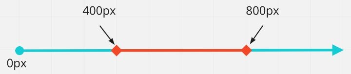
body {background-color: red; }
}Оператор ","
Оператор , (буквально «АБО») дозволяє вказати набір виразів, при виконанні хочаб одного з них, виконається медіа-запит.
@media (max-width: 600px), (min-width: 900px) {
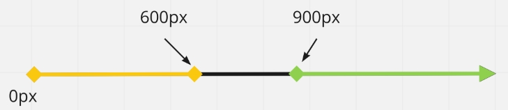
body {background-color: orange; }
}Оператор not
Оператор not (буквально «НЕ») дозволяє зробити заперечення, тобто скасувати медіа-запит. Ключове слово not додається на початку медіа-запиту і застосовується до всього запиту. Використовується дуже рідко, в якихось специфічних випадках.
При використанні оператора not обов'язково повинен бути зазначений тип носія, тому що за замовчуванням для нього буде встановлено значення all і вираз not all буде читатися буквально як «не всі», і медіа-запит ніколи не виконається.@media not print { /* ... */}
/* Ніколи не виконається */
@media not (max-width: 500px) { /* ... */}
/* Виконається, якщо ширина буде більша за 500px. */
@media not screen and (max-width: 500px) {
body { background-color: tomato; }
}Перевизначення стилів
Ніщо не заважає браузеру застосувати більше одного медіа-запиту одночасно, якщо вони підходять за умовою. Медіа-запити не додають специфічності селекторам, які вони містять, але порядок правил як і раніше має значення. Тобто правила, що знаходяться в медіа-запитах, беруть участь у стандартному каскадуванні під час складання фінальних стилів елемента.
/* Базовий стиль */
body { background-color: #fff;}
/* На 900px і ширше перевизначаємо фон */
@media screen and (min-width: 900px) {
body {background-color: #388e3c; }
} -
Метатег viewport
Область перегляду (в'юпорт, viewport) - це видима, прямокутна область веб-сторінки, що не містить адресний рядок, панель закладок та інші службові елементи браузера.
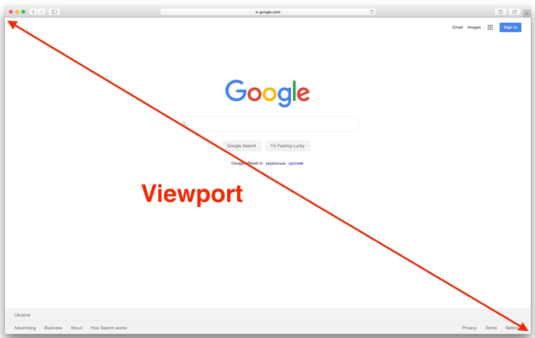Сторінки, адаптовані для перегляду на різних пристроях, повинні містити в розділі
мета-тег viewport. Він повідомляє браузеру, яким чином потрібно контролювати розміри і масштаб в'юпорту.< head>
< meta name="viewport" content="width=device-width, initial-scale=1.0" />
< title>Мета-тег viewport важливий для адаптивних сторінок< /title>
< /head>
width=device-width - встановлює ширину в'юпорту (width), що дорівнює фізичній ширині екрану пристрою (device-width).
initial-scale=1.0 - встановлює співвідношення (масштаб) 1:1 між CSS-пікселями і апаратними пікселями пристрою.
-
Типи верстки
Респонсивна (responsive)
має кілька варіантів відображення, переходи між ними плавні, елементи і контейнер тягнуться як гумові. При зміні розміру в'юпорту блоки плавно стискаються або розтягуються, а коли настає точка перелому (breakpoint) - змінюють своє розташування таким чином, щоб оптимально зайняти увесь вільний простір за горизонталлю.
Респонсивному контейнеру один раз задається властивість max-width в базових стилях, щоб він довільно тягнувся, але максимально був не ширшим за вказане значення.
.container.responsive { max-width: 1140px;}Адаптивна (adaptive)
має кілька варіантів відображення, і, на відміну від респонсивної сторінки - буквально. Дизайн змінюється ривками у жорстко заданих точках перелому, і не тягнеться між ними.
Адаптивному контейнеру задається початкове значення максимальної ширини, після чого, воно перевизначається у кожній точці перелому.
/* Задаємо базову ширину адаптивного контейнера */
.container.adaptive { max-width: 320px; }
@media screen and (min-width: 600px) {
.container.adaptive { max-width: 600px; }
}
@media screen and (min-width: 900px) {
.container.adaptive { max-width: 900px; }
}
@media screen and (min-width: 1140px) {
.container.adaptive { max-width: 1140px; }
}Який підхід використовувати? Все залежить від дизайну, типу веб-сайту і фінансових можливостей замовника. Для більшості веб-сайтів малого та середнього бізнесу достатньо адаптивної версії. Респонсивна верстка дорожча в дизайні, проектуванні і розробці, оскільки її складніше і довше робити, але вона незамінна в інтерфейсах сучасних веб-застосунків. Іноді бізнес-завдання краще виконає окрема мобільна версія або взагалі нативний застосунок, замість веб-сайту.
-
Стратегія Mobile First
спочатку робиться мобільна версія, після чого планшетна і десктопна. Це робить актуальну інформацію легко доступною і дозволяє приховати або змінити елементи на будь-якому екрані.
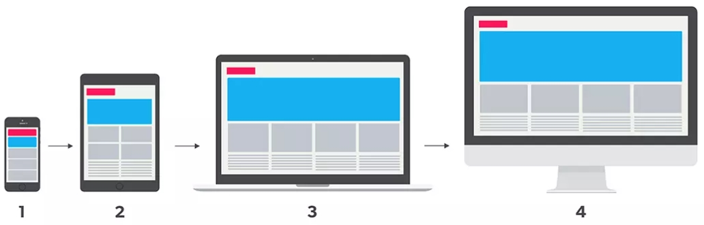одні з найважливіших вимог в Mobile First розробці це:
Насамперед показати найважливіший зміст.
Вебсайт повинен бути легковаговим та оптимізованим, оскільки швидкість підключення мобільної мережі може бути слабкою, залежно від місця знаходження користувача.
Веб-сайт не повинен завантажувати більше ресурсів, ніж потрібно користувачеві для отримання потрібної інформації.
Додаткова інформація повинна завантажуватися тільки на вимогу користувача.
При розробці веб-сайту у такого підходу є великі переваги.
- Один веб-сайт - для всіх пристроїв тільки один проект. Скорочує необхідну кількість розробників.
- Зручність інтерфейсу - насамперед користувачі отримають важливий зміст сторінки.
- Швидкість завантаження - сторінка буде завантажуватися швидше на мобільних пристроях, оскільки кількість завантажених і відображених ресурсів буде меншою.
- Рейтинг в пошуку - наприклад Google не тільки надає пріоритет сайтам, оптимізованим для мобільних пристроїв, але й враховує час відкриття сторінок.
-
Mobile-first CSS
З технічної точки зору реалізація Mobile First досить проста - стилі для мобільних пристроїв - це базові стилі за межами медіа-запитів, після чого, для кожної точки перелому додається медіа-запит. в якому перевизначаються необхідні базові стилі, стилі з попереднього проміжку, або додаються нові. Тому в медіа-запитах переважно використовується медіа-функція min-width.
.element { /* Базові стилі */ }
@media screen and (min-width: ширина-планшета) {
.element { /* Стилі планшета */ }
}
@media screen and (min-width: ширина-десктопа) {
.element { /* Стилі десктопа */ }
}Тобто створюється легковагова версія стилів для мобільних пристроїв, а всі стилі для ширших екранів закриваються всередині відповідних медіа-запитів. Водночас HTML-розмітка не змінюється.
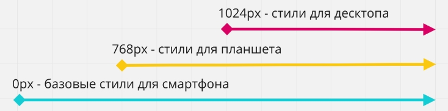
Плюс такого підходу у тому, що для мобільних стилів практично ніколи не потрібно задавати позиціонування, наприклад за допомогою Flexbox, тому що весь контент розміщується в одну колонку один за одним - дефолтна поведінка блокових елементів у стандартному потоці документа. Це означає, що в медіа-запитах для ширших екранів не доведеться перевизначати позиціонування.
На ілюстрації нижче показана структура медіа-запитів і стилів для простої сторінки з 2-ма точками перелому 768px і 1024px. CSS-правила всередині медіа-запитів просто додають нові стилі або скасовують попередні.Плюси такої верстки:
Базовий CSS-код чистіший, оскільки нам допомагає потік документа і блокова модель у позиціонуванні елементів інтерфейсу.
Наслідування стилів від вузьких до широких екранів.
Мінімальне перевизначення стилів позиціонування, що випливає з першого пункту. -
Медіа-функція max-width
Для більшості ситуацій достатньо використовувати min-width і додати або перевизначити стилі. Проте, бувають ситуації, коли використання медіа-функції max-width робить код чистішим і читабельнішим.
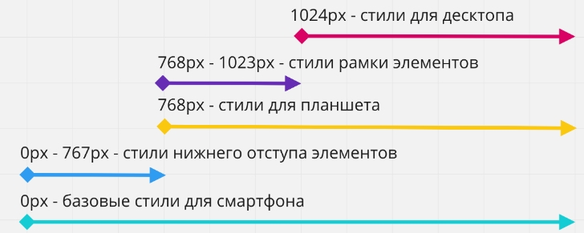
Уявімо таку ситуацію - в останньому прикладі елементам необхідно додати нижній відступ тільки на мобільному пристрої, тобто до 767px (з 768 починаються стилі планшета). А для планшетного проміжку, від 768px до 1023px, необхідно, щоб в елементів з'являлася рамка.
Використання тільки min-width призведе до того, що в стилях медіа-запиту з min-width: 768px доведеться обнулити нижній відступ елементів. А в стилях медіа-запиту з min-width: 1024px будемо обнуляти стилі рамки. Не найкраще рішення.
У таких ситуаціях гарною практикою буде закрити специфічні стилі у певних проміжках, і допоможе нам в цьому медіа-функція max-width. -
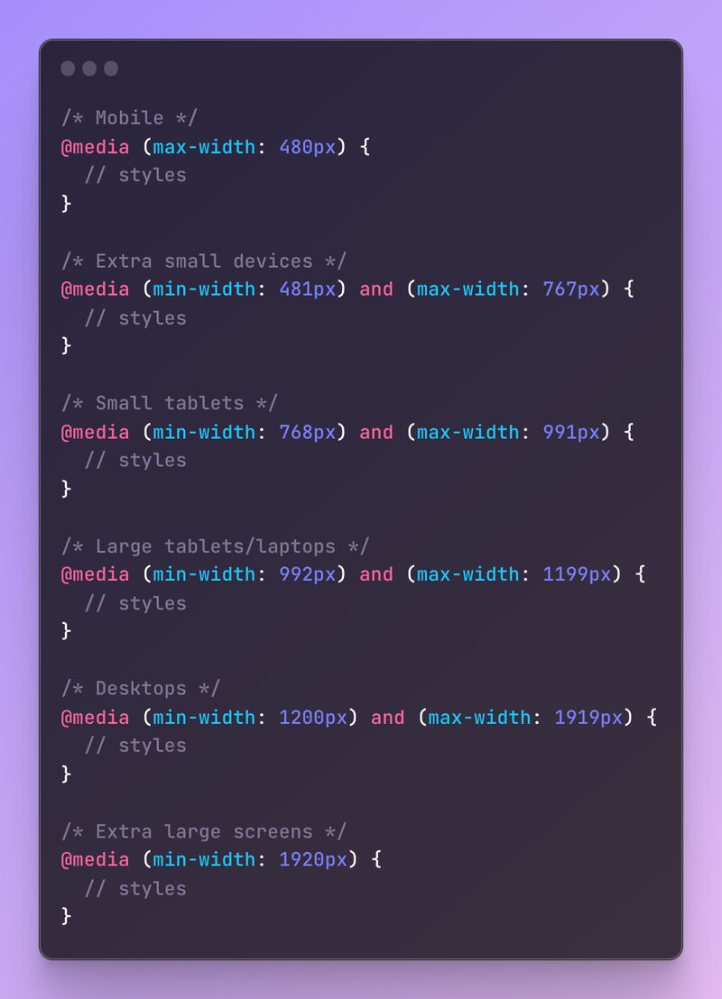
-
-
Відео та аудіо
- Адаптивное видео и видеоролик в качестве фона. Вставка видео/аудио на сайт. HTML-теги VIDEO и AUDIO.
- Відео Аудіо конвертор
-
Додати відео
< video > < /video>
Для розмітки відеоконтенту використовується парний тег
< video src="http://techslides.com/demos/sample-videos/small.webm"> < /video>
-
Формати відео
< source / >
Існує декілька популярних відеоформатів, які необхідно надати браузеру на вибір: webm, mp4 і ogg. Для цього прибираємо атрибут src у тегу < video> і додаємо новий тег < source> для кожного формату. В атрибуті src вказуємо адресу відеофайлу, а в атрибуті type - формат відео. Браузер вибере зі списку перший, який він підтримує і завантажить його, проігнорувавши інші.
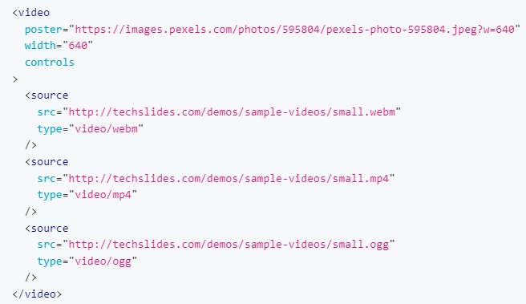 -
Додати - Аудіо
< audio > < /audio>
< audio src="song.mp3" controls autoplay loop preload="auto">< /audio>
-
Формати аудіо
< source / >
Подібно до відео, видаляємо атрибут src і використовуємо тег < source> з атрибутами src і type.
< audio controls>
< source src="song.mp3" type="audio/mpeg" />
< source src="song.ogg" type="audio/ogg" />
< /audio>
-
video
src=""
вказує адресу відеофайлу
poster=""
адреса зображення, яке використовується як постер, якщо відео завантажене або ще не відтворюється
width=""
height=""
задають висоту і ширину як у зображення
controls
атрибут-прапорець, якщо присутній, додаються елементи управління відео
autoplay
атрибут-прапорець, якщо присутній, відтворення відео починається як тільки воно доступне
loop
атрибут-прапорець, якщо присутній, відео буде повторюватися в циклі
preload
вказує режим попереднього завантаження відео. Його значення впливає на те, яка інформація буде завантажена. Значення за замовчуванням залежить від браузера, в якому була відкрита веб-сторінка.
none
не завантажувати відео заздалегідь
metadata
завантажити службову інформацію (тривалість тощо)
auto
заздалегідь завантажувати всі відео
-
audio
src=""
вказує адресу аудіофайлу
controls
атрибут-прапорець, якщо присутній, додаються елементи управління аудіо
autoplay
атрибут-прапорець, якщо присутній, відтворення аудіо починається як тільки воно доступне
loop
атрибут-прапорець, якщо присутній, аудіо буде повторюватися в циклі
preload
вказує режим попереднього завантаження аудіофайлу. Його значення впливає на те, яка інформація буде завантажена. Значення за замовчуванням залежить від браузера, в якому була відкрита веб-сторінка.
none
не завантажувати аудіо заздалегідь
metadata
завантажити службову інформацію (тривалість тощо)
auto
заздалегідь завантажувати увесь аудіофайл
Атрибути Відео та аудіо
Атрибути
-
a
target="_blank"
вказує на те, в якій вкладці відкривається сторінка після кліку на посилання
title="Пошукова система Google"
додає спливаючу підказку до тексту посилання.
rel="noreferrer noopener nofollow"
Атрибут rel доповнює атрибут href інформацією про відношення між поточним і пов'язаним документом, і використовується в парі з target="_blank"
захищає сторінку від зломуdownload="ім'я файлу"
Атрибут download="ім'я файлу" повідомляє браузеру, що зазначений ресурс не повинен відкриватися, а завантажуватися в момент, коли користувач клікне на посилання.
Атрибут можна використовувати без вказівки значення, тоді буде використано ім'я оригінального файлу.href="tel:+14251234563"
href="mailto:example@mail.ua"
Посилання можуть здійснювати дзвінки на телефони, відправляти повідомлення або телефонувати по скайпу.
href="#about" (швидкий перехыд по роздылам)
Посилання з якорем використовується для створення навігації по поточній сторінці. Наприклад, для швидкого переходу до якоїсь секції.
ВСІ АТРИБУТИ
Для створення якоря необхідно додати тег, до якого ми хочемо проскролити сторінку, атрибут id - унікальний ідентифікатор. А атрибуту href у посилання задати значення, що починається з символу #, після якого вказаний ідентифікатор елемента. -
button
type="button"
Необхідно явно вказувати атрибут type. Його значення за замовчуванням - submit, але, найчастіше потрібне значення button. Так, кнопка типу «кнопка» - така особливість.
-
img
src="https://images.pexels.com/photos/67112/pexels-photo-67112.jpeg"
обов'язковий атрибут, вказує адресу зображення. Шлях до зображення може бути абсолютним, або відносним.
alt="Macbook Air на сірому дерев'яному столі"
обов'язковий атрибут, альтернативний опис.
width="400"
height="400"
задають розміри зображення в пікселях. Без зазначення розмірів зображення відображається на сторінці в оригінальному розмірі. Якщо задати тільки одну величину, браузер автоматично вирахує іншу для збереження пропорцій.
-
video
src=""
вказує адресу відеофайлу
poster=""
адреса зображення, яке використовується як постер, якщо відео завантажене або ще не відтворюється
width=""
height=""
задають висоту і ширину як у зображення
controls
атрибут-прапорець, якщо присутній, додаються елементи управління відео
autoplay
атрибут-прапорець, якщо присутній, відтворення відео починається як тільки воно доступне
loop
атрибут-прапорець, якщо присутній, відео буде повторюватися в циклі
preload
вказує режим попереднього завантаження відео. Його значення впливає на те, яка інформація буде завантажена. Значення за замовчуванням залежить від браузера, в якому була відкрита веб-сторінка.
none
не завантажувати відео заздалегідь
metadata
завантажити службову інформацію (тривалість тощо)
auto
заздалегідь завантажувати всі відео
-
audio
src=""
вказує адресу аудіофайлу
controls
атрибут-прапорець, якщо присутній, додаються елементи управління аудіо
autoplay
атрибут-прапорець, якщо присутній, відтворення аудіо починається як тільки воно доступне
loop
атрибут-прапорець, якщо присутній, аудіо буде повторюватися в циклі
preload
вказує режим попереднього завантаження аудіофайлу. Його значення впливає на те, яка інформація буде завантажена. Значення за замовчуванням залежить від браузера, в якому була відкрита веб-сторінка.
none
не завантажувати аудіо заздалегідь
metadata
завантажити службову інформацію (тривалість тощо)
auto
заздалегідь завантажувати увесь аудіофайл
%-(ширина) який займає елемент на сторінці
Ширину елемента ділимо на ширину сторінки і отримуємо %
ширена сторінки 1200пк
ширена елемента 750пк
750 / 1200 = 63%
Визначити висоту в % яку займає елемент на сторінці
Висоту елемента ділимо на ширину контейнера в якому знаходиться елемент і отримуємо %
ширена контейнера 1200пк
висота елемента 440пк
440 / 1200 = 36.66%
Таблиці
HTML теги для побудови таблиць-
Заголовок таблиці
< caption >
Якщо у таблиці є заголовок, звичайно можна розмітити його, використовуючи теги заголовків.
Але семантичніше буде використовувати спеціальний табличний тег, який повинен розташовуватися всередині таблиці, найпершим елементом. Таблиці
< table >
визначає всю таблицю, контейнер для контенту.
< th >
Клітинки-заголовки
< tr >
рядок таблиці (table row). Не може бути порожнім, повинен містити хоча б одну клітинку.
< td >
клітинка таблиці (table data). Можна використовувати тільки всередині рядка. У кожному рядку таблиці повинна бути однакова кількість клітинок.
Секції таблиці
< thead >
шапка, обгортає групу рядків таблиці в області заголовка.
< tbody >
тіло, обгортає основну групу рядків таблиці.
< tfoot >
підвал, означає групу рядків таблиці в області нижнього колонтитула.
Групування клітинок
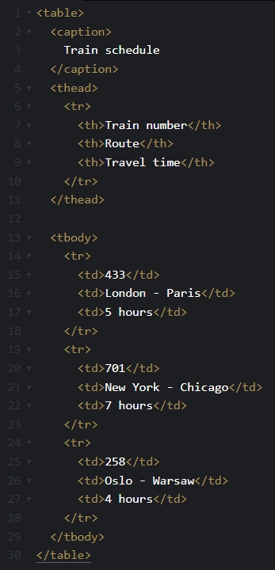colspan
rowspan
Для того щоб розширити клітинку за горизонталлю, використовується атрибут colspan, за вертикаллю - rowspan. Потрібно визначити групу клітинок для злиття і потім крайній верхній і лівій клітинці групи задати атрибут colspan з кількістю клітинок, які потрібно об'єднати праворуч та/або rowspan - знизу. Після цього обов'язково потрібно видалити вже непотрібні клітинки праворуч та/або знизу.
< th rowspan="2">Хмарний сервіс< /th>
< th colspan="3">Використання< /th>
Форма
ФРІЛАНСЕР form 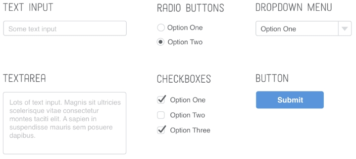-
контейнер для групи пов'язаних елементів форми
Елемент < form>...< /form>
В елемента < form> немає обов'язкових атрибутів, тому в прикладі наведені кілька корисних необов'язкових.
name
унікальне ім'я форми на поточній веб-сторінці. Використовується як на сервері, так і на клієнті під час роботи з формою. Може містити символи англійського алфавіту в будь-якому регістрі, цифри, підкреслення і тире. В імені не можна використовувати пробіл.
autocomplete
визначає, чи може браузер автоматично заповнювати значення всіх елементів форми. Має всього два значення off і on. Цю поведінку можна буде змінити для кожного елемента форми.
novalidate
атрибут-прапорець, не має значення. Каже браузеру не перевіряти валідність введених даних під час відправлення форми. Якщо атрибут не вказаний, виконується клієнтська валідація.
< form name="signup_form" autocomplete="on" novalidate>
< label> Email
< input type="email" name="email" />
< /label>
< label> Password
< input type="password" name="password" />
< /label>
< button type="submit">Submit< /button>
< /form> -
Елемент < label>...< /label>
Елемент
< form>
< label for="user_email">Email< /label>
< input type="email" name="email" id="user_email" />
< label for="user_password">Password< /label>
< input type="password" name="password" id="user_password" />
< button type="submit">Submit< /button>
< /form> -
Елемент < input>
< input type="text" name="username" />
Універсальний елемент для створення різноманітних полів введення. Тип поля визначається атрибутом type, значення якого за замовчуванням text - однорядкове текстове поле, що приймає будь-які символи.
Атрибут name визначає ім'я цього запису, а значення - це те, що ввів користувач.
Значення атрибута name також використовується при роботі з формою в JavaScript.
Атрибут autofocus
Поле введення, якому заданий цей атрибут, автоматично отримає фокус під час завантаження сторінки, і в ньому можна відразу набирати текст. За замовчуванням атрибут не встановлений для жодного поля.
Оскільки фокус не може бути у кількох елементів одночасно, атрибут задається полю, з якого користувачеві варто почати заповнювати форму. Атрибут autofocus - логічний, тобто без значення, вказується тільки назва.Атрибут placeholder
Дозволяє відображати текст-підказку про те, які дані необхідно ввести в поле, коли елемент < input> порожній. Цей атрибут можна використовувати в будь-якому елементі форми, де є текстове введення.
-
Елемент < textarea>...< /textarea>
Створює багаторядкове текстове поле для введення великої кількості тексту. Наприклад, для зворотного зв'язку, коментаря, поста у соцмережах, уточнення деталей замовлення тощо.
Атрибут rows
встановлює кількість рядків (висоту)
Атрибут cols
стовпчиків (ширину)
На практиці вказується тільки rows, а ширина елементу контролюється за допомогою CSS.
resize: both | horizontal | vertical | none
За замовчуванням елемент < textarea> можна розтягувати за горизонталлю і вертикаллю. Для того щоб контролювати можливість зміни розміру користувачем, в CSS є властивість resize.
-
Елемент < select>...< /select>
Випадне меню - це альтернатива радіо-кнопкам, оскільки за замовчуванням дозволяє вибрати один з багатьох варіантів. Елемент < select> - це спливаюче меню з атрибутом name, що містить набір елементів < option> з атрибутом value.
Текст всередині елемента < option> відображається користувачеві, а значення атрибута value - це те, що буде використано під час відправлення форми.
За замовчуванням вибраний перший елемент < option> зі списку. Це можна змінити, задавши необхідній опції атрибут-буль selected.Групування опцій
Іноді потрібно розбити список на окремі групи, не пов'язані між собою. Для цих цілей існує тег < optgroup>. Щоб додати заголовок групи, використовується атрибут label.
-
Елемент < datalist>
Автозаповнення - це прийом, з яким знайомі всі користувачі. Під час введення символів у текстове поле пошукова система пропонує різні варіанти автозаповнення. Під час набору нового повідомлення електронної пошти, поштовий клієнт пропонує список отримувачів тощо.
Елемент < datalist> створює список попередньо встановлених значень, які можна вибирати під час набору в пов'язаному текстовому полі. Цей список прихований і стає доступним під час отримання інпутом фокуса і набору тексту в ньому. Список, що створюється елементом < datalist>, зв'язується з текстовим полем за допомогою атрибута id. Його значення повинно збігатися зі значенням атрибута list тегу < input>.
Елементи < option> також можуть мати атрибут value. Це корисно, якщо текст опції та значення не збігаються. Наприклад, користувач може не знати скорочення штату в США. У випадному меню він побачить список штатів та їх скорочень, а вибираючи опції, текстове поле буде заповнено лише значенням опції. -
Пошта і пароль
email
Значення атрибута type впливає на тип поля, набір символів, які в нього можна ввести і подальшу валідацію значення. Наприклад, якщо браузер смартфона бачить поле з типом email, він відображає користувачеві спеціальну клавіатуру для введення електронної пошти з легко доступним символом @. Браузер також може надати спосіб вибрати адресу електронної пошти з адресної книги.
password
Для типу password, значення пароля, що вводиться, буде візуально підмінено на маркери з міркувань безпеки.
Атрибути minLength і maxLength
не обов'язкові. Вони дозволяють обмежити кількість символів, які можна ввести у полі.
-
Радіо-кнопки (перемикачі)
Якщо задати атрибуту type значення radio - інпут перетвориться у перемикач (радіо-кнопку, radio button). Радіо-кнопки завжди йдуть групами, що дозволяє користувачеві вибрати одне з безлічі визначених значень.
Кожній радіо-кнопці в групі задається однакове значення атрибута name, інакше браузер не знатиме, що це група.
На відміну від текстових полів, в радіо-кнопку не можна вводити дані, тому кожній з них необхідно вказати значення в атрибуті value. Це значення, яке буде передане на сервер, коли користувач відправить форму.
Логічний атрибут checked вказує на те, який перемикач буде обраний (відмічений) за замовчуванням. У групі радіо-кнопок в стані checked може бути тільки один елемент. -
Чекбокси (прапорці)
Прапорці (чекбокси, checkbox) схожі на перемикачі, але дозволяють вибирати довільну кількість значень, тобто багато з багатьох. Чекбоксів може бути ціла група, наприклад, вибір хобі, або тільки один, наприклад, прийняття згоди користувача під час реєстрації.
-
Числа
Звичайні текстові поля приймають буквально все: цифри, літери, пробіли, розділові знаки тощо. Для того, щоб дозволити вводити тільки числа, з можливістю обмежити діапазон, використовується тип поля number. При введенні даних у числове поле браузер автоматично ігнорує всі символи, крім цифр.
Може бути необхідно заборонити введення занадто великих, або від'ємних чисел. Ця проблема вирішується за допомогою атрибутів min і max, які визначають діапазон введення.
За замовчуванням числові поля приймають тільки цілі числа. Цю поведінку можна змінити за допомогою атрибута step, який вказує крок зміни числа. За замовчуванням значення кроку дорівнює 1.< label> Age < input type="number" name="age" value="0" min="18" max="120" /> < /label>
-
Телефонні номери
Тип tel створює поле введення телефонних номерів, які можуть бути представлені у різних форматах. Зараз єдина користь від застосування поля типу tel полягає у відображенні віртуальної клавіатури для введення телефонних номерів у мобільних браузерах, яка містить цифри, але не літери.
-
Повзунки
Тип range використовується для створення повзунків з цілими і дробовими значеннями. Атрибути min і max встановлюють діапазон значень, а step контролює крок. Щоб встановити значення, потрібно просто перетягнути повзунок у потрібну позицію між мінімальним і максимальним значеннями.
потрібен JS
const rangeInput = document.querySelector('input[type="range"]');
const output = document.querySelector(".js-selected-value");
rangeInput.addEventListener( "input", (e) => (output.textContent = e.target.value) );Selected value: 50
-
Дата та час
У браузерах є вбудований календар, в якому користувач може вибрати необхідну дату та/або час. Атрибути min і max дозволяють встановити мінімальні і максимальні дати, за умови використання правильного формату.
Через різний зовнішній вигляд у різних браузерах і складність його зміни за допомогою CSS, замість нативного календаря найчастіше використовують готові JavaScript-бібліотеки. -
Групування полів
Групування пов'язаних елементів робить форми зрозумілішими для користувачів.
Елементи < fieldset> і < legend>...< /legend>
Елемент < fieldset> - це контейнер для групування декількох пов'язаних елементів у формі, а вкладений < legend> виконує роль заголовка групи. Пов'язані радіо-кнопки і чекбокси завжди повинні бути згруповані, інші типи полів групуються у разі потреби.
-
Групування з можливістю оформлення
Елемент < fieldset> - це контейнер для групування декількох пов'язаних елементів у формі, а вкладений < legend> виконує роль заголовка групи. Пов'язані радіо-кнопки і чекбокси завжди повинні бути згруповані, інші типи полів групуються у разі потреби.
< div role="group" aria-labelledby="contact-details-head">
< p id="contact-details-head">Enter your contact details< /p>
Related elements
< /div>Атрибут role="group"
вказує на те, що елементи всередині цього
є частиною групи.Атрибут aria-labelledby="contact-details-head"
містить ідентифікатор елемента з описом групи.
Валідація
Щоразу під час заповнення полів форми не в тому форматі, який вони очікують, ми отримуємо зворотний зв'язок у вигляді повідомлень. Так працюють форми реєстрації, оформлення замовлення та будь-які інші, де важливий формат даних, що вводяться.
Це називається валідація форми - перевірка коректності значень, що вводяться.-
два види валідації
Валідація на клієнті
це перевірка, яка відбувається в браузері, перш ніж дані форми будуть відправлені на сервер. Це зручно для UX (user experience), оскільки користувач миттєво отримує зворотний зв'язок в процесі або відразу після введення значення в поле.
-
Валідація на сервері
е остання лінія захисту веб-застосунку від неправильних або шкідливих даних. Перевірка, яка виконується на бекенді, після відправлення даних і перед їх збереженням в базі даних. Якщо дані не проходять перевірку валідності, відповідь відправляється назад клієнту, щоб повідомити користувачеві, які виправлення потрібно зробити.
-
Атрибути валідації
У кожному сучасному браузері вбудована можливість валідації вмісту полів форми без використання JavaScript. Для цього використовується комбінація різних типів полів та їх атрибутів. Якщо користувач ввів невалідне значення, браузер покаже повідомлення.
Обов'язкові поля
required
Логічний атрибут required позначає поле форми як обов'язкове для заповнення. Якщо поле порожнє, браузер виведе повідомлення-підказку, а форма не буде відправлена.
< label> Email
< input type="email" name="email" required />
< /label> -
Обмеження довжини
minlength і maxlength
Атрибути minlength і maxlength накладають обмеження на кількість символів, що вводяться, наприклад для пароля або імені користувача.
< form>
< label> Username
< input type="text" name="username" required minlength="3" />
< /label>
< label> Password
< input type="password" name="password" required minlength="6" maxlength="12" />
< /label>
< button type="submit">Submit< /button>
< /form> -
Обмеження значення
min і max
Атрибути min і max дозволяють перевірити входження чисельного значення у вказаний діапазон. Можуть використовуватися тільки в полях з типом number, range або date.
-
Регулярний вираз
pattern
Атрибут pattern дозволяє вказати регулярний вираз (шаблон), щодо якого буде перевірятися значення поля. Використовується для розширення базової валідації. Наприклад, якщо потрібно, щоб ім'я користувача складалося з двох слів або пароль містив хоча б один символ у верхньому регістрі, один в нижньому регістрі і одне число.
За замовчуванням, у разі помилки валідації, браузер відобразить стандартний текст «Please match the requested format». Додатковий текст-підказку, який буде відображений у повідомленні від браузера, можна вказати в атрибуті title.
< form>
< label> Username
< input type="text" name="text" required pattern="^[a-zA-Z]+\s[a-zA-Z]+$" title="Username must be two words separated by space." />
< /label>
< label> Password
< input type="password" name="password" required minlength="6" maxlength="12" pattern="^(?=.*\d)(?=.*[a-z])(?=.*[A-Z])(?!.*\s).*$" title="Please include at least 1 uppercase character, 1 lowercase character, and 1 number." />
< /label>
< button type="submit">Submit< /button>
< /form>
Псевдокласи стану
Існує набір псевдокласів, створених спеціально для елементів форм, і жодним чином не впливають на інші елементи. За допомогою них можна оформляти поля форми за станом валідності введених даних або обов'язковості заповнення.
-
Дозволяють вибрати елемент в активному або відключеному стані
:enabled і :disabled
який визначається присутністю або відсутністю булевого атрибута disabled. Застосовуються до елементів < input>, < select> і < button>.
Елементи з атрибутом disabled не отримують ефект ховеру і фокусу, а також ігнорують кліки миші. Це можна використовувати, наприклад для того, щоб заборонити надсилання форми, доки не заповнені всі поля, але для цього потрібен JavaScript.
< button class="btn">Active button< /button>
< button class="btn" disabled>Disabled button< /button> -
дозволяє вибрати тільки відзначені поля
:checked
Застосовується до радіокнопок і чекбоксів, та дозволяє вибрати тільки відзначені поля. Наприклад, нехай при виборі чекбоксу текст мітки стає синім. Використовуючи селектор +, можна вибрати мітку, коли чекбокс відзначений, але для цього необхідно, щоб тег < /label> був у розмітці після чекбоксу.
< input type="checkbox" name="hobby" value="music" id="music" />
< label for="music">Музика< /label> -
Ці псевдокласи застосовуються до елементів < range>, < number> і < date>, якщо у них вказані атрибути min і max.
:in-range і :out-of-range
Якщо ввести число менше 1 або більше 10, колір рамки інпуту зміниться на червоний. Якщо значення залишається в рамках діапазону, колір буде зеленим.
.form-input:in-range { border-color: #4caf50;}
.form-input:out-of-range { border-color: #f44336;}У таких селекторів є обмеження. Колір рамки інпуту в прикладі відразу червоний, якщо задане початкове значення менше 1 або більше 10, і зелений, якщо початкове значення не задане або належить до діапазону від 1 до 10. Тобто селектори застосовуються ще до введення будь-якого значення в поле. Як вирішити цю проблему розберемося далі.
-
дозволяє показати користувачеві, що поле обов'язкове для заповнення ще до відправлення.
:required і :optional
< form class="form">
< label class="form-label">
< span class="label-text">Username (optional)< /span>
< input type="text" class="form-input" name="username">
< /label>
< label class="form-label">
< span class="label-text">Email (required)< /span>
< input type="email" class="form-input" name="mail" required>
< /label>
< button type="submit">Submit< /button>
< /form>Проблеми такі самі, як і у попередньої групи псевдокласів - стилі застосовуються ще до введення будь-якого значення.
-
Дозволяють вибрати елементи з валідним або невалідним введеним значенням.
:valid і :invalid
Перевірочні обмеження задаються атрибутами type, minlength, maxlength і pattern.
< form class="form">
< label class="form-label">
< span class="label-text">Username< /span>
< input type="text" class="form-input" name="username" required minlength="3">
< /label>
< label class="form-label">
< span class="label-text">Email< /span>
< input type="email" class="form-input" name="mail" required>
< /label>
< button type="submit">Submit< /button>
< /form>Проблеми такі самі, як і у попередньої групи - якщо поле містить атрибут required, то селектор :invalid застосовується ще до введення значення, оскільки обов'язкове поле не може бути порожнім.
-
При в веденні тексту в поля форми і колір рамки поля зміниться, щойно зникне плейсхолдер.
:placeholder-shown
< form class="form">
< label class="form-label">
< span class="label-text">Username< /span>
< input type="text" class="form-input" name="username" placeholder="Jacob Mercer">
< /label>
< button type="submit">Submit< /button>
< /form>css
.form-input {
padding: 8px;
border: 1px solid orange;
border-radius: 4px;
font-family: inherit;
font-size: 16px;
outline: none;
}
.form-input:placeholder-shown { border-color: blue; } -
Композиція псевдокласів
.form-input:not(:placeholder-shown):required:valid { /* ... */}
Проблема застосування стилів до введення значень вирішується комбінацією декількох псевдокласів в одному селекторі.
Селектор виходить громіздким, але не складним, і застосується до елемента з класом .form-input.
Якщо елемент обов'язковий для заповнення - :required.
Введене значення валідне - :valid.
Текст плейсхолдера не видно - :not(:placeholder-shown).
Щойно щось ввели і плейсхолдер зникнув - відбувається валідація і селектор застосовується до елемента. Обов'язкова частина цієї техніки - наявність атрибута placeholder, значенням якого може бути текст або просто рядок з одним пробілом, головне не порожній. -
дозволяє застосувати стилі до предків (label > input при фокусі на інпут стилі застосуються на лейбл)
:focus-within
Застосовується до елемента, коли він сам або елементи всередині нього отримують фокус. На відміну від :focus, який вибирає сам елемент, що отримав фокус, :focus-within працює для предків. Це дозволяє застосувати стилі до мітки, форми або окремих її частин, коли користувач взаємодіє з полями.
-